SC208: редизайн сайта клуба единоборств для привлечения клиентов и развития сети
SC208 — клуб единоборств, который со временем вырос из старого одностраничного лендинга: появились новые направления, форматы тренировок и планы по открытию новых клубов. Существующий сайт уже не справлялся с объёмом информации, не помогал пользователям быстро выбрать подходящую тренировку и не был готов к масштабированию
Цель бизнеса
От исследования к структуре сайта
Работу начала с кикоффа с заказчиком: определили цели проекта, задачи бизнеса и планы по развитию клуба. Затем провела анализ конкурентов — изучила, как другие клубы работают с разными аудиториями, помогают выбрать направление и тренера и ведут пользователя к записи
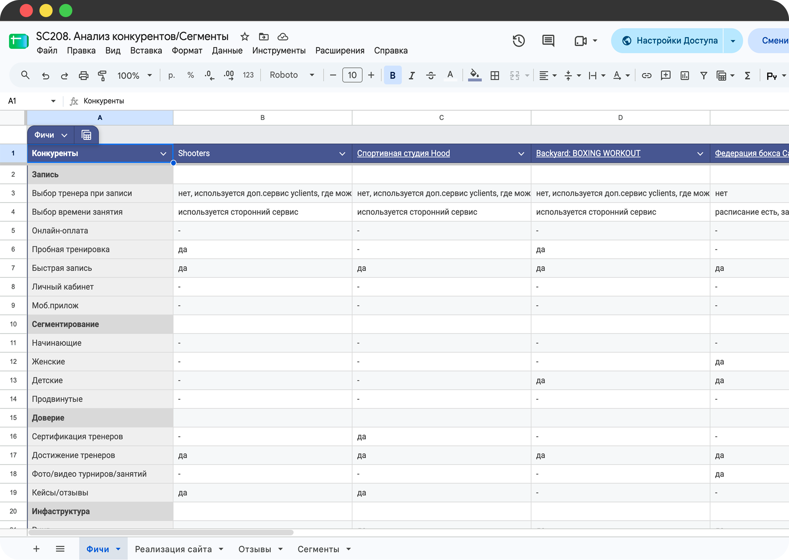
Дальше сегментировала аудиторию и сформулировала JTBD, чтобы определить основные задачи, потребности и барьеры пользователей. На основе исследования сформировала гипотезы и собрала структуру сайта в Miro с учётом разных пользовательских сценариев и дальнейшего масштабирования клуба
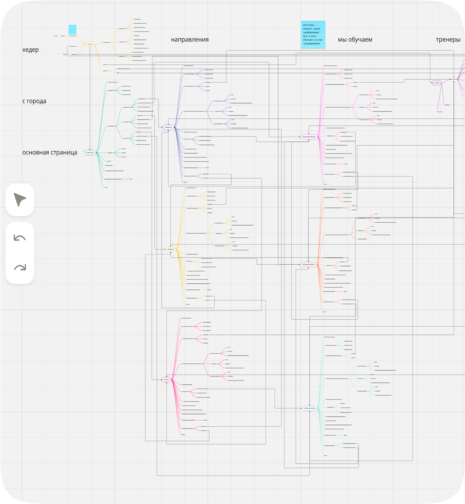
Структуру перевела в lo-fi прототипы и проверила ключевые сценарии на usability-тестах. По результатам тестирования и синхронизаций с заказчиком дорабатывала решения и постепенно пришла к финальной структуре
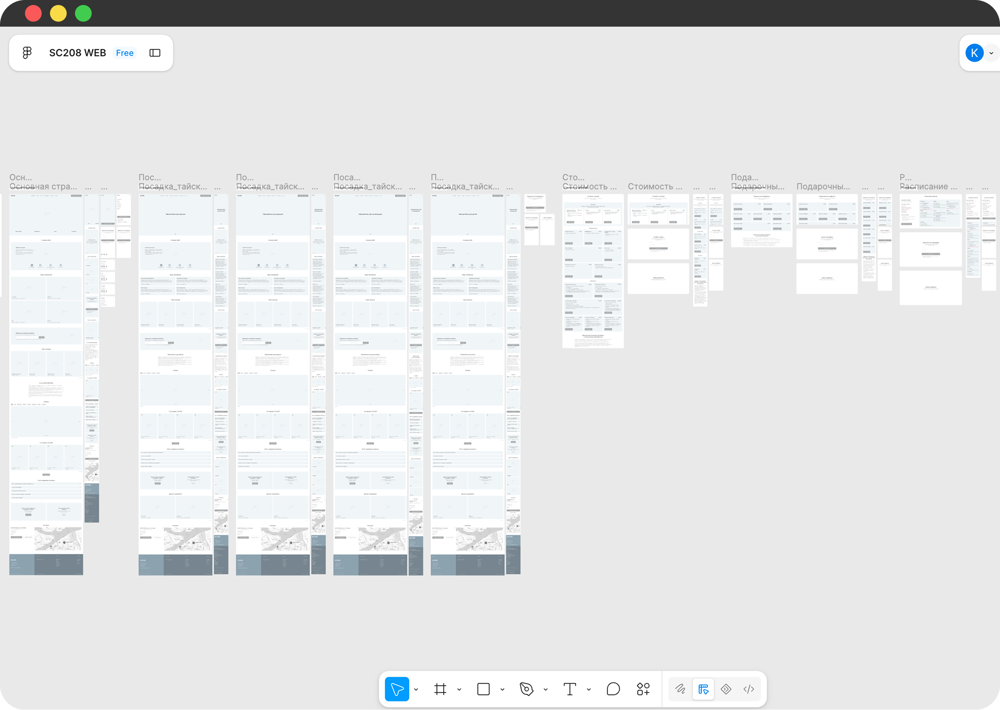
От структуры к визуальной концепции
Когда основные сценарии и структура были определены, мы провели отдельный кикофф по визуальному направлению. Новый сайт должен был не просто обновить интерфейс, а передать характер SC208 — энергию тренировок, атмосферу клуба и комьюнити
Я подготовила две визуальные концепции. Вместе с заказчиком выбрали направление и развили его в финальный дизайн. Основой визуального языка стали живые фото и видео с тренировок вместо постановочного контента — для съёмки я отдельно подготовила рекомендации
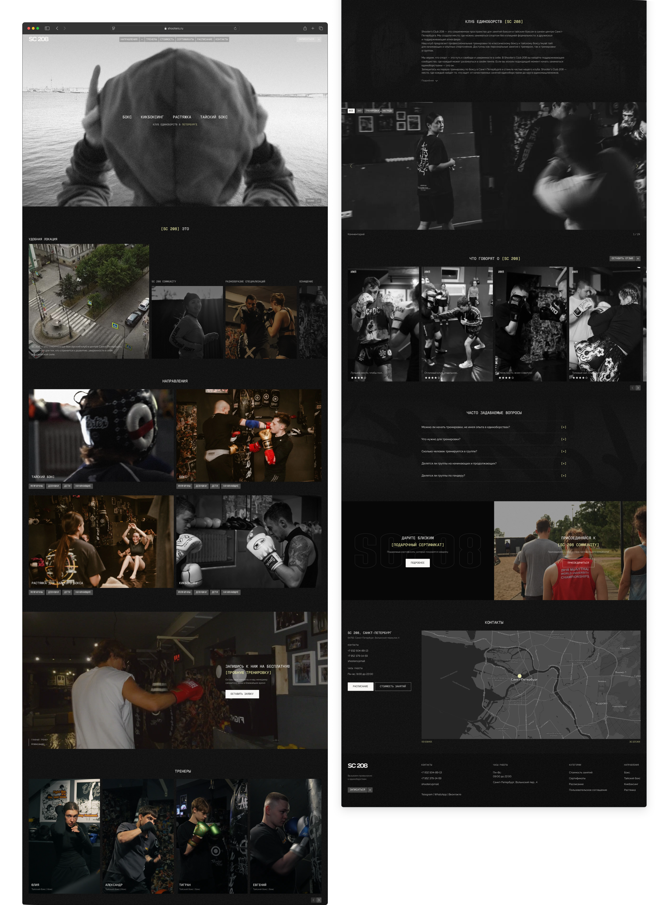
[
Бокс
]
[
Кикбоксинг
]
[
Растяжка
]
[
Тайский бокс
]
Клуб единоборств в
Петербурге
Sound
Направления
Тренеры
Стоимость
Сертификаты
Расписание
Контакты
Записаться
SC 208 — это современный боксёрский клуб в центре Санкт-Петербурга, созданный для тех, кто стремится к развитию, уверенности в себе и физической силе.
Тайский бокс
присоединяйся к
[sc 208 community]
Присоединяйся к нам и стань частью нашего комьюнити!
Присоединиться
Как я решала задачи бизнеса
Упростила путь пользователя до записи
Бизнес-задача
Оптимизировать воронку записи на тренировки: ускорить путь клиента от выбора занятия до отправки заявки и снизить операционную нагрузку на админов
Гипотеза
Контекст = РешениеКонтекст
Старый сайт представлял собой единый лендинг без привязки к конкретным целям пользователя, что создавало барьеры на каждом шаге
Расписание:
Расписание было неточным — просто дата, время и направление, чтобы узнать, будет ли тренировка, пользователю приходилось звонить администратору
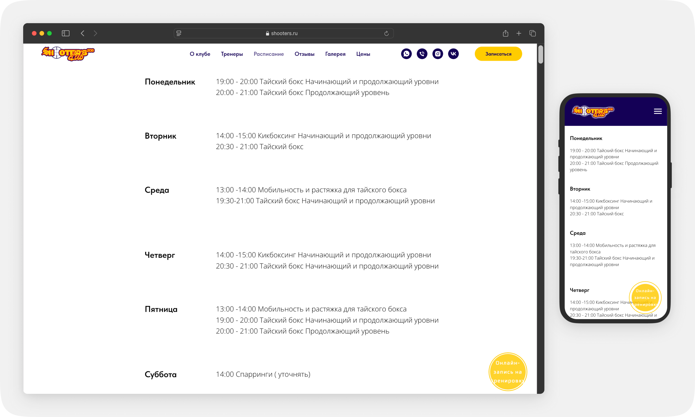
Сделала отдельную посадку для расписания: сортировка по группам (общая, женская, начинающаяя, детская), у каждого занятия — время, направление, длительность, тренер и запись сразу с этой же страницы
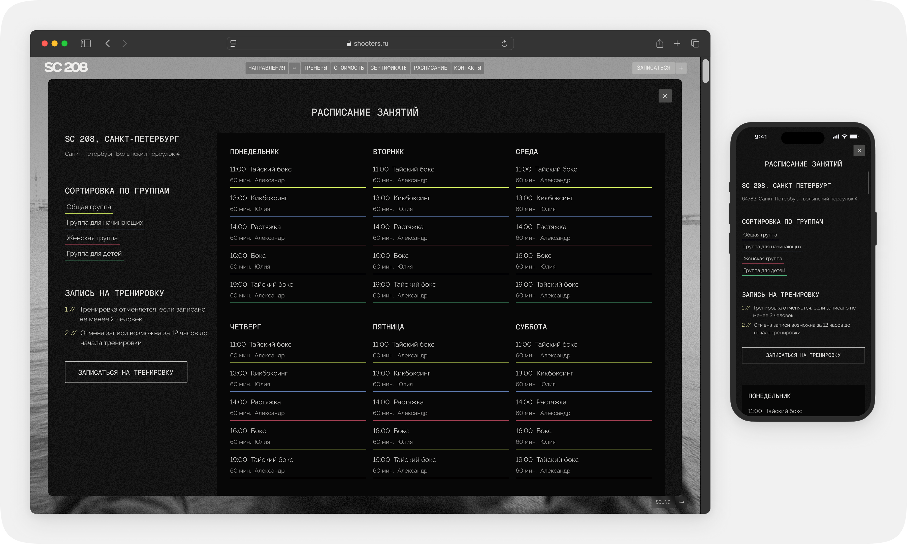
Стоимость:
Цены были рядом с кнопкой «попробуйте бесплатную тренировку» — нелогично, если человек уже смотрит конкретный пакет
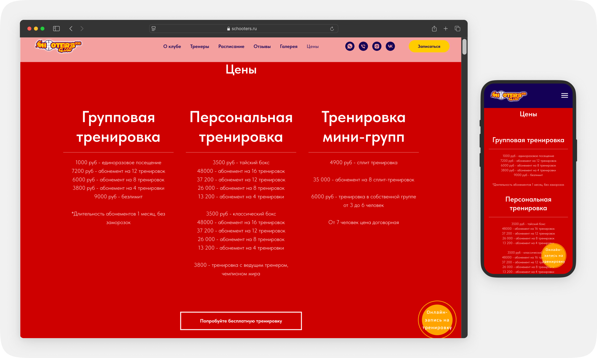
Структурировала тарифы (персональные и групповые), добавила спецпредложение для новичков и кнопку «Приобрести занятие» у каждого пакета
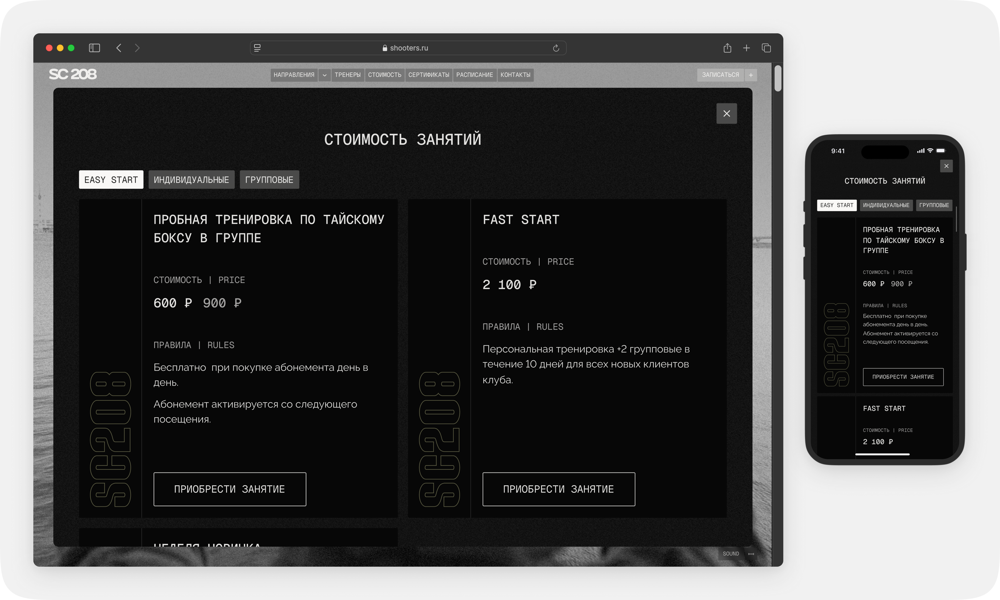
Сертификаты:
Конкретный сертификат вообще нельзя было купить, можно было только оставить заявку и ждать звонка менеджера, чтобы оформить нужный сертификат
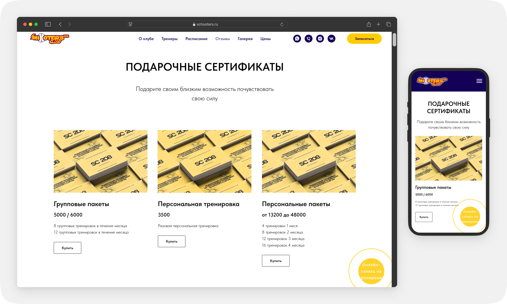
Сделала отдельную посадку для подарочных сертификатов с сортировкой на индивидуальные и групповые — теперь можно купить конкретный сертификат сразу, а не ждать звонка менеджера
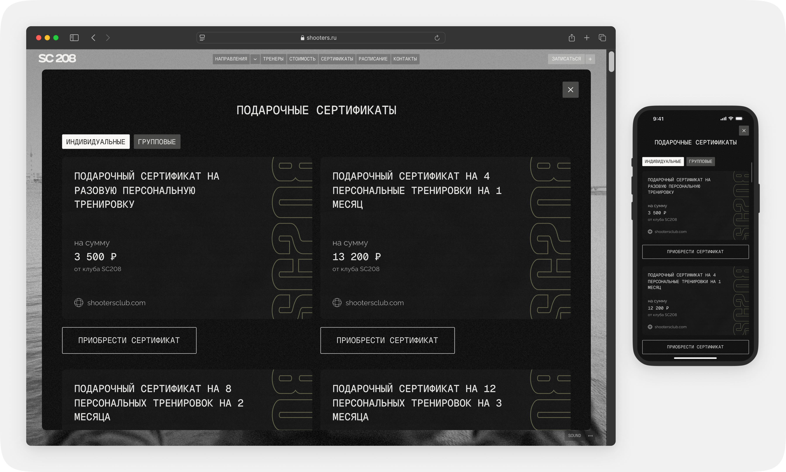
Тренеры:
У тренеров был просто текстовый блок с описанием — без возможности записаться к конкретному тренеру
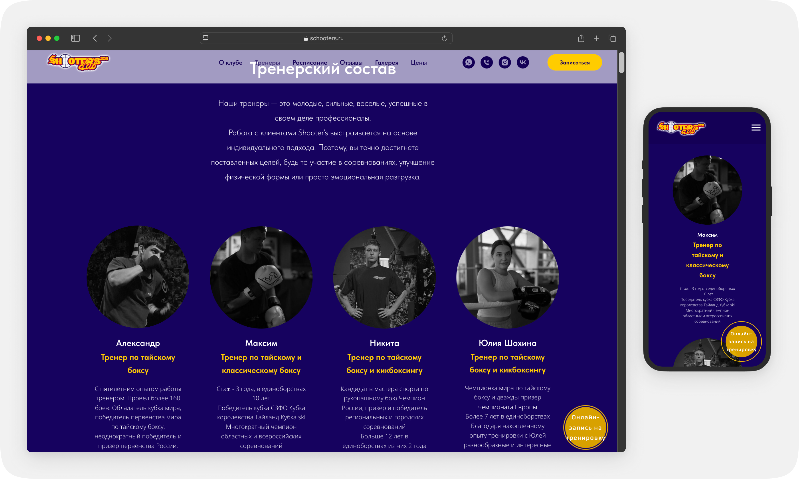
Добавила в карточку тренера живое видео при наведении, полную информацию и запись напрямую к этому тренеру
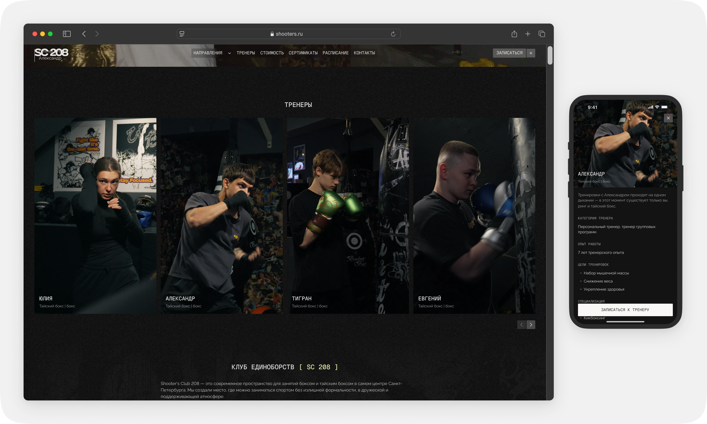
Результат
Адаптировала сайт под разные направления и категории пользователей
Бизнес-задача
Увеличить приток новых клиентов в разные направления клуба
Гипотеза
Контекст
Лендинг клуба создавал впечатление, что фокус идёт исключительно на тайский бокс. Хотя в клубе были женские и детские группы, тренировки для новичков, кикбоксинг и растяжка, эта информация находилась только внутри расписания
Из-за этого пользователи не понимали, подходит ли им клуб, не могли быстро найти нужный формат и завалили администраторов однотипными вопросами
Решение
Разделила пользовательские пути по категориям: мужчины, женщины, дети и новички, чтобы каждый сегмент сразу видел актуальную для него информацию
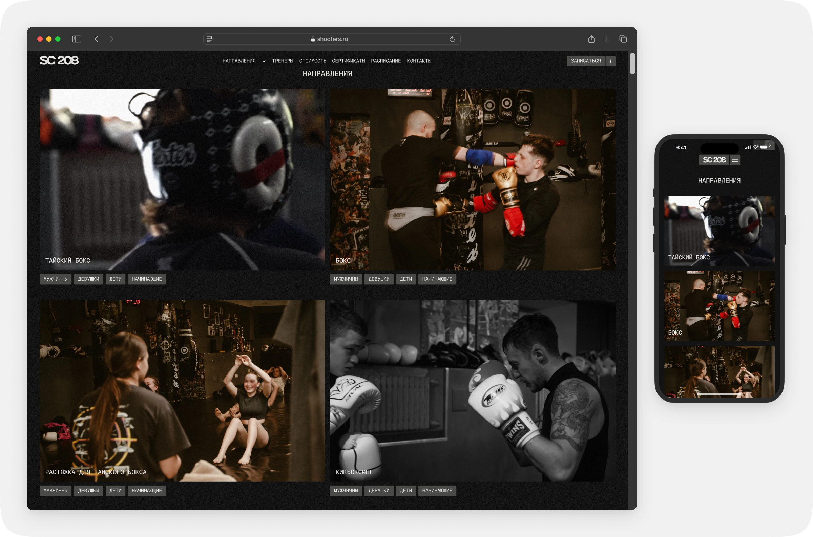
Тайский бокс
Тайский бокс
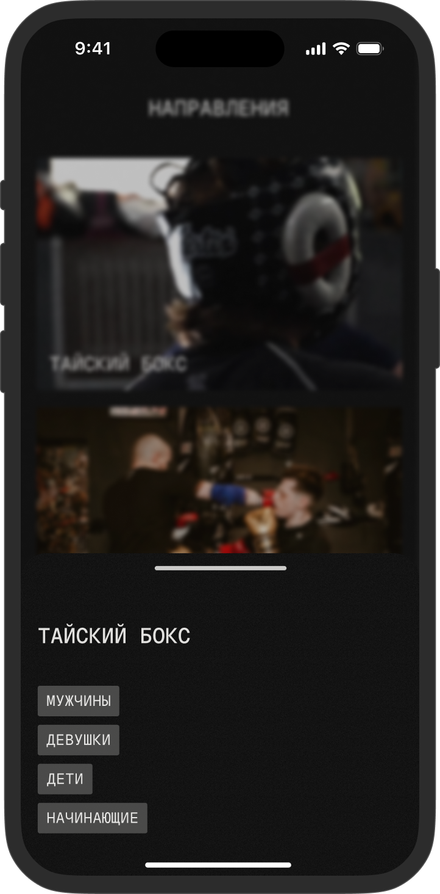
Вынесла каждое направление на отдельную страницу, чтобы пользователь мог сразу выбрать подходящий формат тренировок и записаться
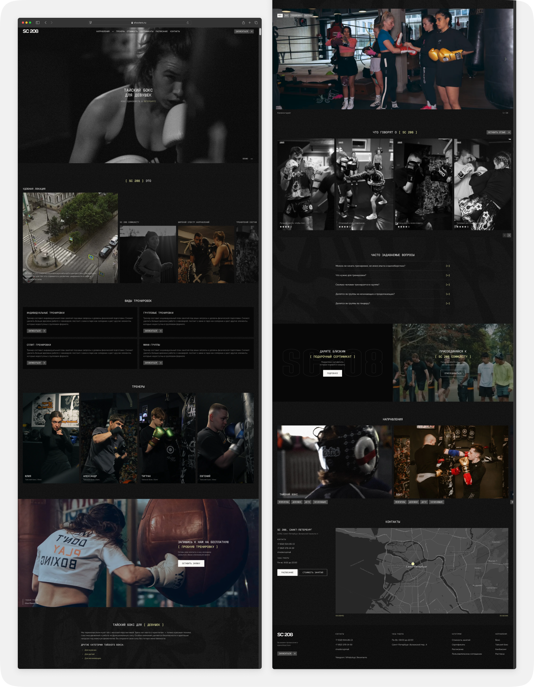
для девушек
Клуб единоборств в
Петербурге
Sound
Направления
Тренеры
Стоимость
Сертификаты
Расписание
Контакты
Записаться
SC 208 — это современный боксёрский клуб в центре Санкт-Петербурга, созданный для тех, кто стремится к развитию, уверенности в себе и физической силе.
присоединяйся к
[sc 208 community]
Присоединяйся к нам и стань частью нашего комьюнити!
Присоединиться
Добавила блок записи на пробную тренировку на главную страницу и на все посадочные, теперь заявка доступна в 1 клик из любой точки
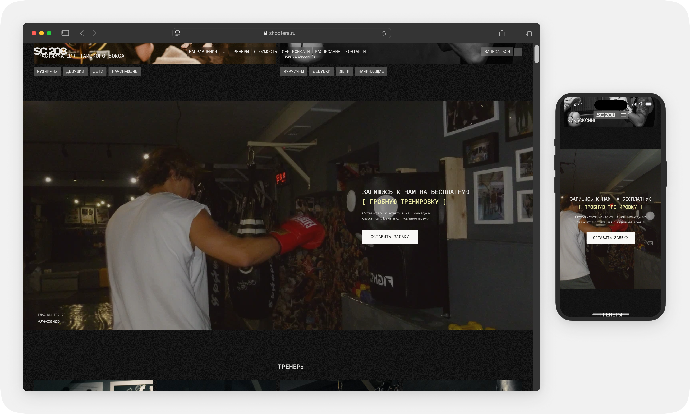
Результат
Подготовила сайт к открытию новых клубов
Бизнес-задача
Упростить запуск новых клубов за счёт готового конструктора страниц
Контекст
У клуба был один филиал, в будущем ребята планировали расширяться. При открытии нового клуба им не хотелось каждый раз обращаться за разработкой нового сайта. Они хотели конструктор с готовыми блоками, в котором можно собрать полноценную страницу нового клуба и привязать к нему посадочные страницы
Решение
Сделала готовый конструктор страниц для новых клубов
Продумала привязку тренеров, расписания, стоимости и посадочных страниц к каждому филиалу
Добавила возможность переключаться между клубами и автоматически определять ближайший по гео
Результат
Итог
Спортивный клуб обновили с нуля: от визуального стиля до архитектуры сайта, что помогло масштабировать бизнес и увеличить приток клиентов